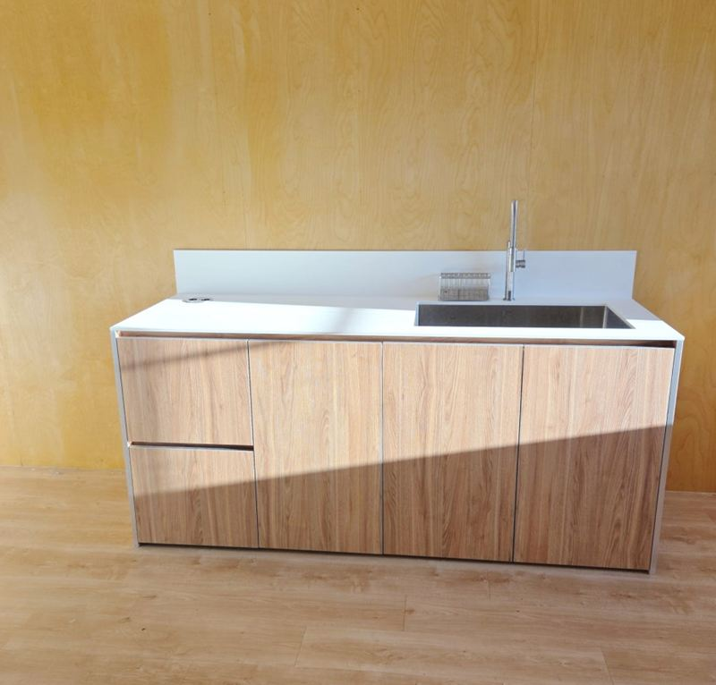
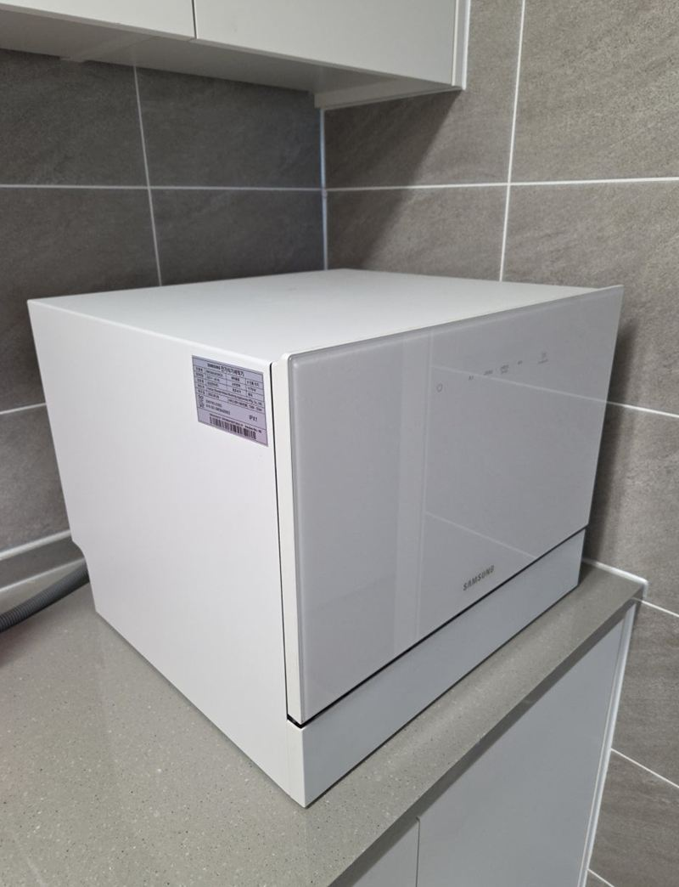
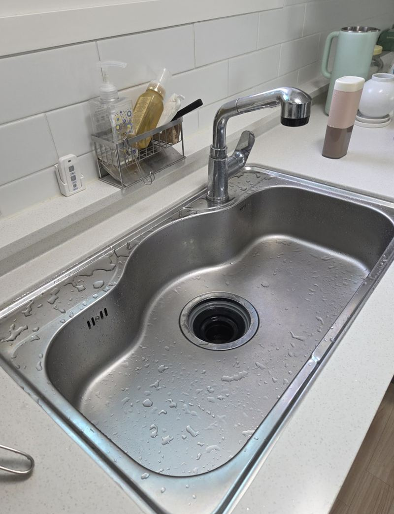
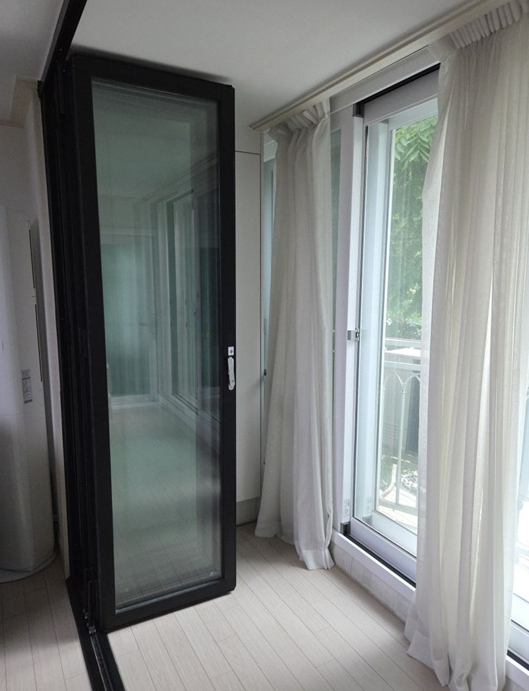
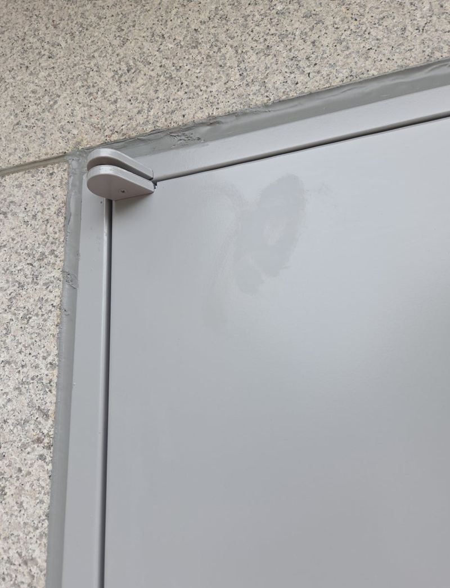
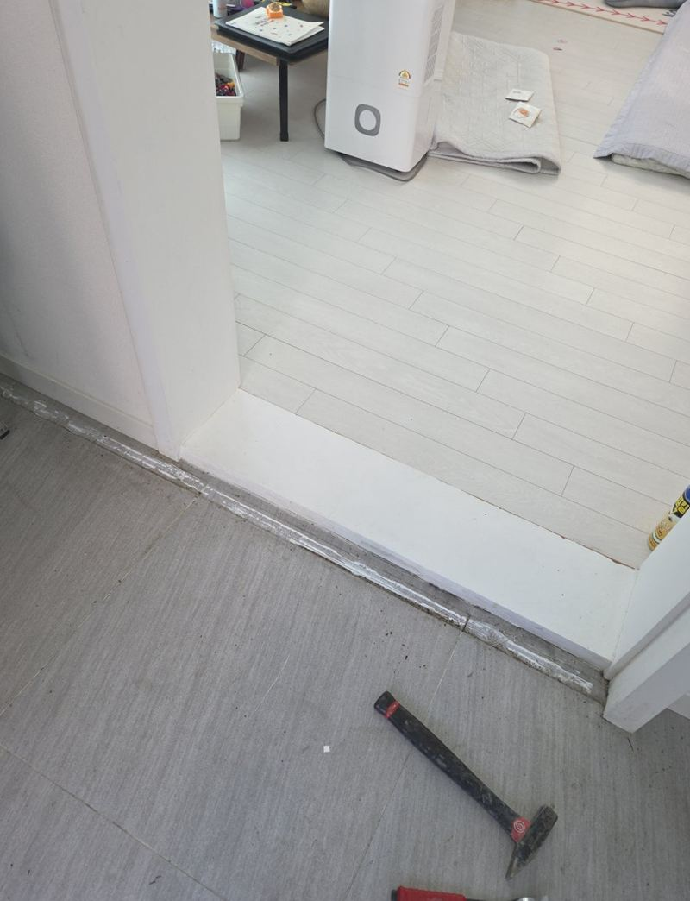
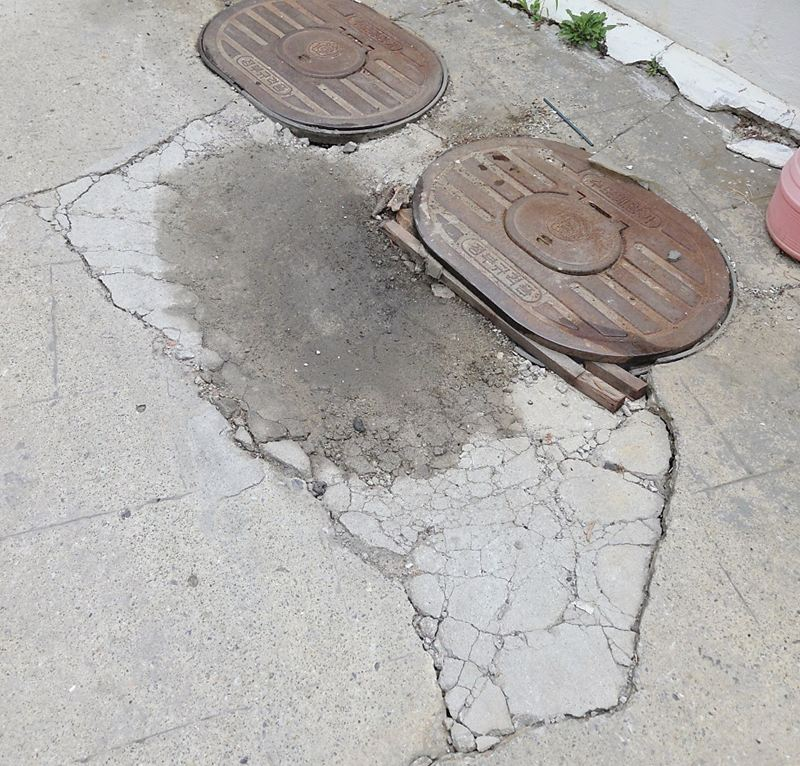
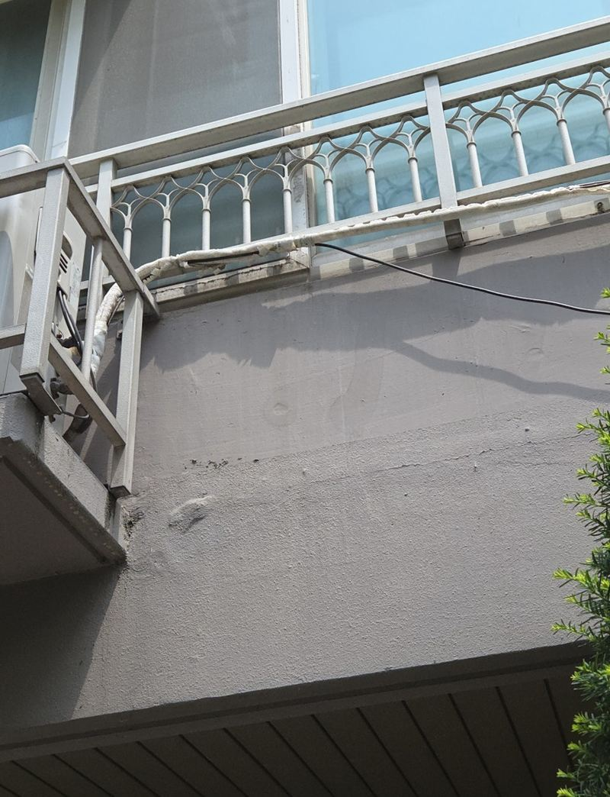

주방·문·단지 시설물
찾아가서 고치는 수리탐험대
집 안에서는 싱크대·후드·인덕션 같은 주방 설비와 방문·폴딩도어·현관문을, 집 밖에서는 아파트와 상가의 볼라드·반사경·콘크리트 바닥을 고쳐요. 서울·경기·인천에서 직접 작업한 현장을 지역별로 모아 두었어요.
고장 난 곳 사진과 지역을 알려주시면 바로 상담해 드려요.
전화 상담 010-4517-9872주방
싱크대 교체부터 후드·인덕션, 식기세척기 설치, 대리석 상판 복원까지

싱크대·수납장실제 현장 15곳 후드실제 현장 8곳
후드실제 현장 8곳 인덕션·하이라이트실제 현장 11곳
인덕션·하이라이트실제 현장 11곳
식기세척기실제 현장 10곳 상판 복원실제 현장 9곳
상판 복원실제 현장 9곳 냉장고장실제 현장 6곳
냉장고장실제 현장 6곳
싱크볼·수전실제 현장 5곳
문·도어
방문·욕실문 교체, 폴딩도어 수리와 철거, 현관문·방화문, 유리문·자동문까지
 방문·욕실문실제 현장 10곳
방문·욕실문실제 현장 10곳
폴딩도어실제 현장 9곳 유리문·자동문실제 현장 8곳
유리문·자동문실제 현장 8곳 슬라이딩·붙박이장실제 현장 7곳
슬라이딩·붙박이장실제 현장 7곳
현관문·방화문실제 현장 6곳
문지방·문턱실제 현장 5곳
아파트·상가 시설보수
관리사무소·건물주분들이 맡기시는 볼라드, 반사경, 콘크리트·아스팔트 보수
 볼라드실제 현장 15곳
볼라드실제 현장 15곳
콘크리트·아스팔트실제 현장 14곳 반사경·출차등실제 현장 9곳
반사경·출차등실제 현장 9곳 조경·시설물실제 현장 6곳
조경·시설물실제 현장 6곳 렉산·우수관실제 현장 5곳
렉산·우수관실제 현장 5곳
실외기·배관 보온실제 현장 5곳
최근 시공 현장
- 동탄 오토바이 진입금지 매립 볼라드 설치 기준 · 2026.11.09
- 평택 노후 철제 방화문 문틀 포함 교체 비용 · 2026.11.03
- 파주 하츠 후드 교체 비용과 작업 순서 · 2025.06.22
상담 전에 준비해 주시면 좋아요
- 고장 난 곳 사진전체가 보이는 사진 한 장, 문제 부위를 가까이 찍은 사진 한 장이면 충분해요.
- 지역과 건물 종류아파트, 빌라, 오피스텔, 상가, 사무실인지 알려주세요.
- 제품 정보후드·인덕션·식기세척기·도어락은 모델명을 알면 더 정확하게 안내드려요.